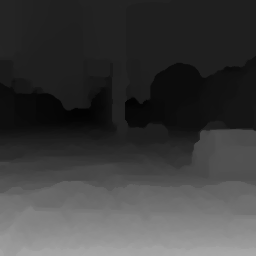
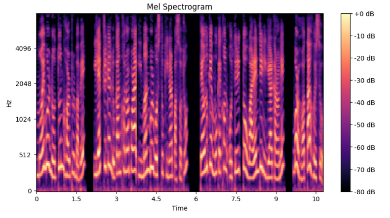

Some of my work
I develop data-driven tools and machine learning models to extract insights from satellite imagery and audio signals, enabling a deeper understanding of our environment.
I also enjoy experimenting with audio and visual data, often creating intuitive interfaces that bridge complex models with real-world usability.
I mostly work with:
Python, PyTorch, NumPy, OpenCV for model building and data processing
SQL, Pandas, Matplotlib/Seaborn for analysis and storytelling
Streamlit, HTML/CSS, JavaScript for interactive interfaces

Denoisy Enhancing low-light images with super-resolution and denoising.

Cloud Removal with CMSN | Removing clouds in satellite imagery to estimate NDVI more accurately.

Agri-scene Classifier with SimCLR Identifying agriculture zones using contrastive learning on satellite images.
Depth Estimation Generating depth maps from challenging low-light captures.
Audio Language Classifier Identifying languages from speech audio using deep learning.
AI-Generated speech Detector across 16 Indian languages.

Fake News Detection (Malayalam) Detecting misinformation using custom neural networks and classic ML models.
Juke A music streaming app built for local creators and listeners with access control.
EduSync AI-powered dashboard to manage classes, track progress, and generate reports.

Chime A multi-user blog platform to share thoughts, follow users, and engage.

KNN Visualizer Interactive visualization of how K-Nearest Neighbors clustering works.
Shawarma Truck Data Project Improving business decisions for a local food truck using data insights.